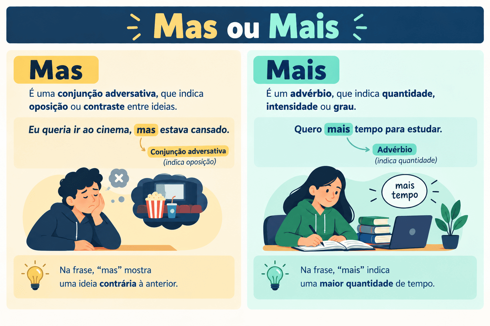

Mas ou Mais: Qual a Diferença, Regras de Uso e Como Não Confundir
A confusão entre mas e mais é um dos desvios gramaticais mais frequentes na escrita cotidiana em Língua Portuguesa. Em virtude da semelhança sonora e da tendência à monotongação ou vocalização na linguagem coloquial falada em diversas regiões do país, muitos falantes acabam transportando para o texto escrito uma forma pela outra.
Entretanto, na norma-padrão exigida na redação do ENEM, no vestibular do PAES UEMA e em concursos públicos de todo o Brasil, trocar mas por mais é considerado um erro grave de ortografia e coesão textual (Competências 1 e 4). Enquanto mas atua como uma conjunção que expressa contraste e oposição, mais exprime essencialmente noções de quantidade, intensidade ou acréscimo.
Neste guia completo do Mestre Kira, você aprenderá as diferenças sintáticas e semânticas entre os dois vocábulos, dominará os macetes de substituição imediata (os testes do porém e do menos), compreenderá as regras de pontuação da conjunção adversativa, analisará casos especiais como a correlação “não só... mas também” e testará seus conhecimentos em um quiz de 10 questões com gabarito comentado.

Visão Geral: Oposição vs. Quantidade e Intensidade
Para eliminar definitivamente qualquer hesitação na escrita, basta analisar o sentido fundamental que a palavra desempenha na oração:
- MAS: é predominantemente uma conjunção coordenativa adversativa. Introduz uma ideia de oposição, contraste, compensação ou ressalva em relação ao que foi dito anteriormente (equivale a porém, contudo, todavia, entretanto, no entanto);
- MAIS: é primordialmente um advérbio de intensidade ou um pronome indefinido. Expressa acréscimo, adição, superioridade ou quantidade numérica/gradativa (é o antônimo direto de menos).
Macetes de substituição imediata:
• Dá para trocar por PORÉM? → Escreva MAS (sem "i").
• Dá para trocar por MENOS? → Escreva MAIS (com "i").
O Uso de "MAS" (sem I)
A palavra mas tem como função principal ligar orações ou termos de mesma função sintática, estabelecendo uma relação semântica de adversidade (quebra de expectativa em relação à afirmação anterior).
O candidato estudou muito para o concurso, mas não obteve a classificação desejada.
- sentido: estabelece uma oposição entre o esforço do estudo e o resultado alcançado;
- teste prático: “O candidato estudou muito para o concurso, porém não obteve a classificação desejada.”
O projeto é desafiador, mas trará benefícios inestimáveis à comunidade.
Teste de substituição: “O projeto é desafiador, contudo trará benefícios...”
Regras fundamentais de pontuação com o "MAS"
O emprego da pontuação associada à conjunção mas segue regras rígidas na norma culta:
- Vírgula obrigatória antes do "mas": Quando une orações coordenadas com sujeitos iguais ou diferentes, deve ser antecedido por vírgula (ex.: “Tentou o diálogo, mas ninguém o ouviu.”);
- Nunca use vírgula depois do "mas": A não ser que haja um termo explicativo ou adjunto adverbial intercalado logo em seguida.
- Incorreto: *“Ele tentou, mas, não conseguiu.”
- Correto: “Ele tentou, mas não conseguiu.”
- Correto com intercalação: “Ele tentou, mas, infelizmente, não conseguiu.”
O Uso de "MAIS" (com I)
A palavra mais transmite essencialmente a ideia de acréscimo, soma, maior quantidade ou elevação de grau. Pode desempenhar diferentes papéis na morfologia:
1. "Mais" como Advérbio de Intensidade
Modifica o sentido de um verbo, de um adjetivo ou de outro advérbio, indicando intensidade ou grau superlativo/comparativo. É o oposto direto de menos:
Ela é a aluna mais dedicada da turma.
Intensifica o adjetivo “dedicada” (oposto: a aluna menos dedicada).
Fale mais alto para que todos possam ouvir na sala.
Modifica o advérbio “alto” (oposto: fale menos alto).
2. "Mais" como Pronome Indefinido
Acompanha ou substitui um substantivo, indicando uma quantidade indefinida de seres ou coisas:
Precisamos de mais livros didáticos na biblioteca escolar.
Determina o substantivo “livros” com valor quantitativo (oposto: menos livros).
Muitos desistiram da prova, mas alguns pediram mais.
Atua substituindo o substantivo com valor pronominal.
3. "Mais" em Locuções Comparativas
Integra estruturas que estabelecem graus de comparação de superioridade: mais... (do) que:
O romance de Graciliano Ramos é mais profundo do que muitos imaginam.
Estrutura comparativa de superioridade.
Uso de MAS (Contraste)
“Gostaria de viajar, mas preciso trabalhar no fim de semana.”
Ideia de impedimento e ressalva (= porém).
Uso de MAIS (Quantidade / Intensidade)
“Gostaria de ter mais tempo livre para viajar.”
Ideia de quantidade e acréscimo (= oposto de menos tempo).
Casos Especiais e Pegadinhas de Provas
Determinadas estruturas combinam os dois vocábulos ou empregam a palavra em contextos que exigem atenção analítica:
1. A correlação aditiva: "Não só... mas também"
Quando a conjunção mas vem acompanhada de palavras como também, ainda, além disso, ela perde o valor adversativo e passa a ter valor aditivo (expressando soma de argumentos):
A leitura não só amplia o vocabulário, mas também desenvolve o pensamento crítico.
A expressão “mas também” soma dois benefícios da leitura (equivale a e também).
Atenção com a grafia: Nunca escreva *“não só... mais também”. A conjunção coordenativa da correlação é sempre mas (sem "i")!
2. "Mais ou menos"
Locução adverbial cristalizada que expressa quantidade aproximada, conformidade relativa ou dúvida:
O trajeto até a universidade durou mais ou menos quarenta minutos.
Indica estimativa métrica (escreve-se com "i").
3. "O mais" (Substantivo)
Quando precedido de artigo definido, mais pode atuar como substantivo significando o resto, o restante, o excedente:
Entregue a redação ao avaliador; quanto ao mais, confie na sua preparação.
Significa: “quanto ao restante...”.
Quadro Comparativo: Mas vs. Mais
| Critério | MAS (sem i) | MAIS (com i) |
|---|---|---|
| Classe gramatical principal | Conjunção coordenativa adversativa | Advérbio de intensidade ou pronome indefinido |
| Sentido transmitido | Oposição, ressalva, quebra de expectativa | Acréscimo, aumento de grau, quantidade, soma |
| Mecanismo de teste | Substitui-se por porém, contudo, todavia | Substitui-se pelo oposto menos |
| Pontuação típica | Geralmente antecedido por vírgula | Não exige vírgula obrigatória antes de si |
| Exemplo canônico | Correu muito, mas perdeu o ônibus. | Ele quer mais oportunidades de trabalho. |
O Emprego de Mas e Mais na Redação do ENEM e PAES UEMA
Nas provas de redação dissertativo-argumentativa, esses dois termos desempenham papéis estratégicos:
- Operador argumentativo de contraposição (MAS): O uso de mas (ou conectivos mais formais como entretanto, contudo, não obstante) permite introduzir contra-argumentos ou desmistificar ideias do senso comum, enriquecendo o repertório crítico da Competência 3;
- Intensificação de teses (MAIS): O vocábulo mais é indispensável para expressar comparações e quantificar propostas de intervenção (ex.: “faz-se mister a destinação de mais recursos à infraestrutura escolar”);
- Tolerância zero para a troca ortográfica: Trocar mas por mais em uma redação formal é considerado um dos desvios mais primários de ortografia e coesão, penalizando frontalmente a pontuação nas Competências 1 e 4.
Passo a passo para não errar em provas
-
A frase estabelece um contraste ou barreira?
→ Se indicar oposição ou ressalva, faça o teste: dá para colocar porém ou contudo no lugar? Se der, escreva MAS (sem "i"). Exemplo: Estudei, mas não passei (= porém não passei). -
A frase expressa ideia de quantidade, adição ou intensidade?
→ Se indicar soma ou aumento, faça o teste do antônimo: dá para trocar por menos? Se der, escreva MAIS (com "i"). Exemplo: Quero mais café (= quero menos café). - Cuidado com a estrutura aditiva: Em “não só... mas também”, lembre-se de que a palavra que se une a “também” é sempre MAS.
Quiz — Mas ou Mais
Questão 1 — Assinale a frase em que o emprego de “mas” e “mais” está rigorosamente CORRETO:
Questão 2 — Em “A educação é o caminho ______ seguro para a transformação social, ______ exige investimentos contínuos”, as lacunas devem ser preenchidas por:
Questão 3 — Na oração “O projeto não só preserva o meio ambiente, ______ também gera renda para as famílias ribeirinhas”, a lacuna deve conter:
Questão 4 — Assinale a opção em que a palavra “mas” foi utilizada com valor ADITIVO e não adversativo:
Questão 5 — Em qual das sentenças a pontuação associada à conjunção “mas” está INCORRETA?
Questão 6 — Na frase “Quanto ______ se estuda, ______ fácil se torna a resolução dos simulados”, a alternativa correta é:
Questão 7 — Em “Aquele foi o argumento ______ convincente de todo o debate”, a palavra adequada é:
Questão 8 — Assinale a frase que apresenta ERRO de grafia segundo o padrão culto da língua:
Questão 9 — Em “O atleta parecia exausto, ______ cruzou a linha de chegada com garra”, o conectivo adequado é:
Questão 10 — Observe o período: “Queriam ______ recursos para a escola, ______ o orçamento municipal já estava esgotado; ainda assim, fizeram o ______ difícil”. A sequência correta é:
Resumo sobre mas e mais
- MAS (sem "i"): conjunção coordenativa adversativa que expressa oposição, contraste e ressalva. Troque por porém, contudo, todavia.
- MAIS (com "i"): advérbio de intensidade ou pronome indefinido que expressa quantidade, acréscimo ou grau superlativo. Oposto direto de menos.
- Pontuação do MAS: exige vírgula antes quando liga orações coordenadas. Nunca coloque vírgula imediatamente após o “mas”, salvo se houver expressão intercalada.
- Correlação aditiva: na fórmula “não só... mas também” (ou “não apenas... mas ainda”), a palavra mas expressa adição de argumentos.
- Na redação do ENEM e PAES UEMA: a troca de mas por mais é penalizada severamente nas Competências 1 e 4 como desvio ortográfico e coesivo elementar.
Conclusão
A distinção entre mas e mais é uma das mais diretas e fundamentais da gramática normativa. Dominar os testes práticos de substituição — trocar mas por porém e mais por menos — elimina qualquer margem de erro na escrita em questão de segundos.
Escrever com exatidão ortográfica e usar a pontuação adequada nas orações adversativas demonstra maturidade linguística, fortalece a clareza da argumentação e garante pontos decisivos na redação do ENEM, do PAES UEMA e nos concursos públicos mais disputados.
Perguntas frequentes sobre mas e mais
Qual a diferença básica entre "mas" e "mais"?
“Mas” (sem "i") é uma conjunção que expressa ideia de oposição ou contraste (equivale a porém). “Mais” (com "i") expressa quantidade, adição ou intensidade (é o oposto de menos).
Como saber se devo escrever "mas" ou "mais"?
Faça o teste de substituição mental: se for possível trocar a palavra por porém, escreva mas (ex.: “tentei, mas não consegui” = “tentei, porém não consegui”). Se for possível trocar pelo oposto menos, escreva mais (ex.: “quero mais café” = “quero menos café”).
Deve-se usar vírgula antes de "mas"?
Sim. Quando a conjunção mas introduz uma oração coordenada adversativa, o uso da vírgula antes dela é obrigatório pela norma-padrão (ex.: “Estudou bastante, mas não foi aprovado”).
Pode colocar vírgula depois de "mas"?
Em regra, não. A vírgula só é aceita depois do “mas” se houver uma oração ou adjunto adverbial intercalado entre a conjunção e o verbo (ex.: “Ele prometeu vir, mas, infelizmente, adoeceu”).
O que significa "mas também"?
A expressão “mas também” atua como conectivo coordenativo aditivo em correlações com “não só” ou “não apenas”, servindo para somar dois argumentos em vez de opô-los (ex.: “Ele não só estuda, mas também trabalha”).
Conteúdos relacionados
- Termos Integrantes e Acessórios da Oração
- Orações Coordenadas e Subordinadas: como reconhecer e classificar
- Conjunções da Língua Portuguesa: o que são, tipos, usos e exemplos explicados
- Locuções Adverbiais: o que são, tipos e exemplos
- Sintaxe: estrutura da oração e relações entre as palavras
- Interpretação e Produção Textual
- Gramática da Língua Portuguesa: Guia Completo
- Conteúdos de Gramática — Página 2
- Conteúdos de Gramática — Página 3
- Conteúdos de Gramática — Página 4
Referências bibliográficas
- BECHARA, Evanildo. Moderna Gramática Portuguesa. 37. ed. Rio de Janeiro: Nova Fronteira, 2009.
- CEGALLA, Domingos Paschoal. Novíssima Gramática da Língua Portuguesa. 48. ed. São Paulo: Companhia Editora Nacional, 2008.
- CUNHA, Celso; CINTRA, Lindley. Nova Gramática do Português Contemporâneo. 6. ed. Rio de Janeiro: Lexikon, 2013.
- GARCIA, Othon Moacyr. Comunicação em Prosa Moderna. 27. ed. Rio de Janeiro: Editora FGV, 2010.
- ROCHA LIMA, Carlos Henrique da. Gramática Normativa da Língua Portuguesa. 49. ed. Rio de Janeiro: José Olympio, 2011.
Explore Outros Conteúdos
Continue seus estudos acessando outras seções do site Mestre Kira: